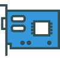

<div class="sectiondochero">
  <div class="doc-container-flex-parent w-container">
    <div class="doc-div-flex-child">
      <h1>Leverage the power of CleanSpeak</h1>
    </div>
  </div>
</div>
<div class="sectiondocproducts">
  <div class="doc-product-flex-parent w-container">
    <div class="doc-product-flex-child">
      <div><a href="/docs/3.x/tech/" class="doc-product-flex-granchild-link w-inline-block w-clearfix"><div class="div-box"><div class="doc-link-main-text">CleanSpeak Tech Docs</div><div class="doc-link-sub-text">Installation, Tutorials, API docs, etc.</div></div></a></div>
    </div>
  </div>
</div>
